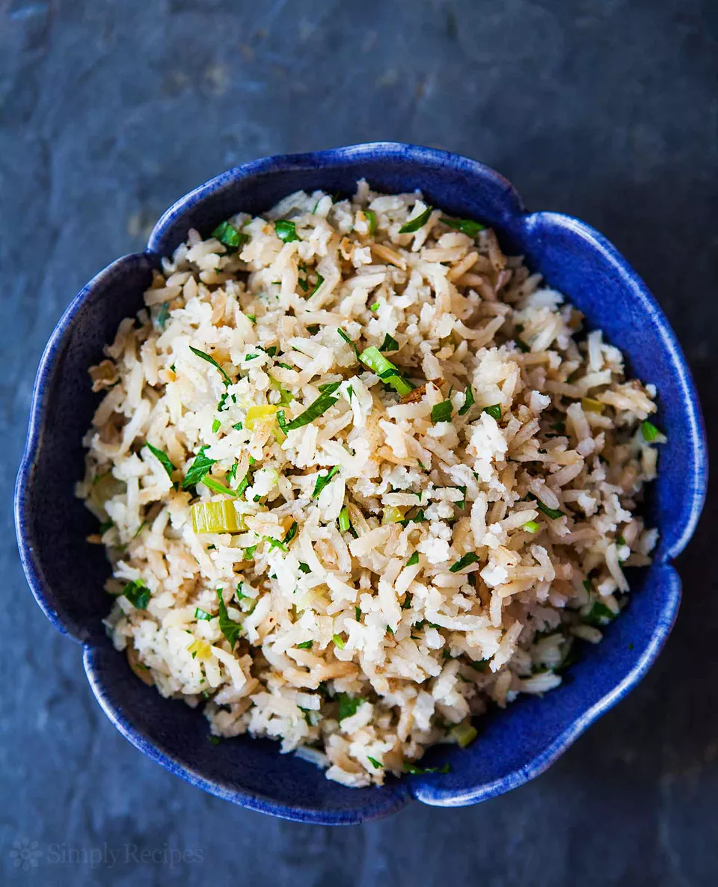

Pillaf

This easy rice pilaf recipe is made with long grain white rice, onion, celery, and stock. It’s delicious with chicken, pork, or steak and takes only 30 minutes to make!
Trying to get a recipe out of my mother is like pulling teeth.
Mom doesn't follow recipes. After 50 years of cooking for her family, she doesn't need to.
Ingredients
- Brown rice
- Wild rice
- Jasmine rice
- Basmati rice
- s way for up to an hou
- tore cooled rice pilaf in a tig
- Reheat it in the microwave or on the stovetop, stirring frequently as it reheats. If